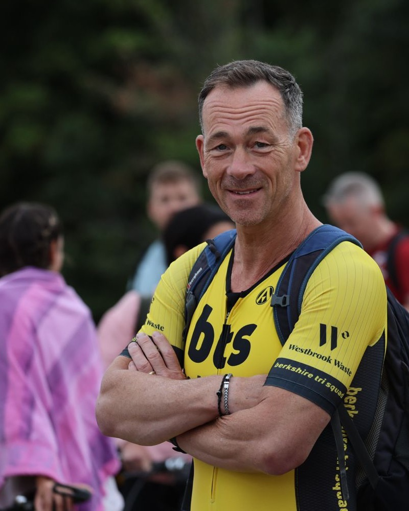

About
Nic Brocklebank
A life spent around performance, sporting and organisational, and one question that runs through both: what lets someone do their best work when it counts?

The story so far
I started in sport. A degree in sports science taught me how people's minds and bodies respond to pressure, and a masters in human resources widened that view to whole organisations. Everything since has been some mix of the two.
I learned the trade at The Wilsher Group, six years designing and running development centres for more than two hundred managers. Then came nearly five years inside Visa Europe, finishing as Head of Talent Management, which showed me how big organisations really work from the inside. Since 2010 I've been an associate with Lane4, the performance consultancy founded by Olympic champion swimmer Adrian Moorhouse, and in 2014 I set up Corporate Gardener. For four years alongside that, I was a visiting lecturer at Brunel University, exploring what high performance in sport can teach business.
Sport never became a hobby that sits politely at the weekend. I race triathlon and sit on the committee of Berkshire Tri Squad, I swim, and I spent seven years as head coach of Maidenhead Rugby Club's under 15s. Since 2013 I've also worked with UK Anti-Doping as a chaperone on drug testing teams, including at the 2015 Rugby World Cup. The Telegraph wrote a piece on that world if you're curious. There's a busy bicycle repair business in my garage too.
I mention all this because it isn't separate from the day job. Testing athletes, coaching teenagers and racing have taught me at least as much about pressure, fairness and preparation as any qualification. Clients tend to describe the coaching as insightful and challenging in equal measure, and I suspect the sport is half the reason why.
Find me on LinkedIn“Companies are actually living organisms, not machines. We keep bringing in mechanics, when what we need are gardeners.”
Peter Senge, The Fifth Discipline
Why “Corporate Gardener”
A gardener can't make anything grow. What they can do is get the conditions right: the soil, the light, what gets pruned, what gets room. Then things grow themselves.
That's a better description of leading people than most, and it's how I try to work. Less quick fix, more careful tending, over seasons rather than weeks.
Standards I hold myself to
- Accredited, and checked. I'm a Senior Practitioner with EMCC, one of the main professional bodies for coaching, and an accredited Insights Discovery practitioner since 1999.
- Supervised. Like any coach worth hiring, I have supervision: experienced peers who regularly examine my work and tell me what I'm missing.
- Still learning. The field keeps moving and so do I, through study, reflection and the occasional uncomfortable piece of feedback of my own.